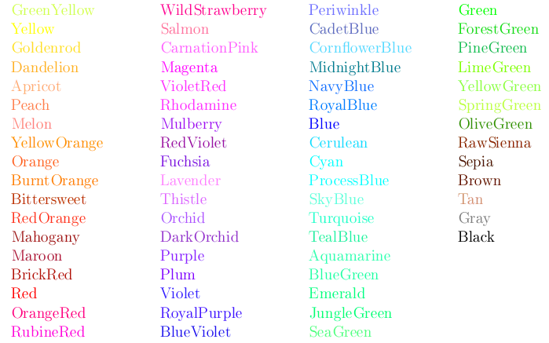

| Opcja | Opis |
|---|---|
| monochrome | Wy³±cza wszelkie polecenia zmieniaj±ce kolor |
| debugshow | ??? |
| dvips | .dvi przetwarzany sterownikiem dvips |
| xdvi | jw monochrome |
| dvipdf | |
| pdftex | pdftex |
| dvipsone | |
| dviwindo | jw |
| emtex | sterowniki emtexa |
| dviwin | |
| oztex | tak jak dvips |
| textures | |
| pctexps | |
| pctexwin | |
| pctexhp | |
| pctex32 | |
| truetex | |
| tcidvi | |
| dvipsnames | do³±cza zbiór definiuj±cy kolory (named colors) |
| nodvipsnames | kasuje definicje kolorów
dostêpnych jako named |
| usenames | powoduje ¿e wszystkie nazwy kolorów definiowanych jako named s± dostêpne bezpo¶rednio (tak jak kolory definiowane explicite -- poleceniem \definecolor) |
| polecenie | opis |
|---|---|
| \definecolor{nazwa}{model}{definicja} |
polecenie definiuje nowy kolor; model i definicja
mo¿e przyjmowaæ warto¶ci jak w poprzednich poleceniach;
model mo¿e przyjmowaæ
nastêpuj±ce warto¶ci:
|
| \DefineNamedColor{named}{nowa nazwa}{model}{definicja} | |
| pierwszy parametr jest nazw± zdefiniowanego w³asnego modelu kolorów (standardowo utworzony jest w³a¶nie model o nazwie named pozosta³e parametry jak w poprzednich definicjach. Co prawda w ten sposób mo¿na definiowaæ w³asne kolory, ale s± to definicje jedynie dla TeX-a, musz± one byæ zdefiniowane równie¿ dla interpretera postscriptu -- w zbiorze color.pro w przypadku sterownika dvips -- taka definicja nie jest tworzona automatycznie (lista dopuszczalnych nazw zawarta jest w zbiorze dvipsnam.def) | |
| \color{nazwa koloru} | prze³±cza kolor tekstu; w drugiej wersji mo¿emy (tak jak w poleceniu \definecolor) |
| \color[model]{definicja} | |
| \textcolor{nazwa koloru}{tekst} | tekst bêdzie prezentowany w danym kolorze; sposób okre¶lania koloru jest identyczny jak w poprzednim poleceniu |
| \textcolor[model]{definicja}{tekst} | |
| \colorbox{definicja koloru t³a}{tekst} | |
| \colorbox[model]{definicja koloru t³a}{tekst} | |
| tekst jest zamykany w pude³ko o okre¶lonym kolorze t³a; kolor okre¶lemy podobnie jak w poprzednich poleceniach | |
| \fcolorbox{kolor ramki}{kolor t³a}{tekst} | |
| \fcolorbox[model]{definicja koloru ramki}{definicja koloru t³a}{tekst} | |
| tekst jest zamykany w pude³ko o okre¶lonym kolorze t³a i ramki | |
| \pagecolor{kolor} | okre¶la kolor t³a dla strony na której wyst±pi³o polecenie, istotna jest ostatnia definicja na stronie |
| \pagecolor[model]{definicja koloru} | |
Standardowo zdefiniowane s± nastêpuj±ce kolory:
black,
white,
red,
green,
blue,
cyan,
magenta,
yellow, a w przypadku aktywnej opcji usenames:

Oczywi¶cie zmiany koloru s± dokonywane za pomoc± postscriptu.
 W³odzimierz Macewicz
W³odzimierz Macewicz